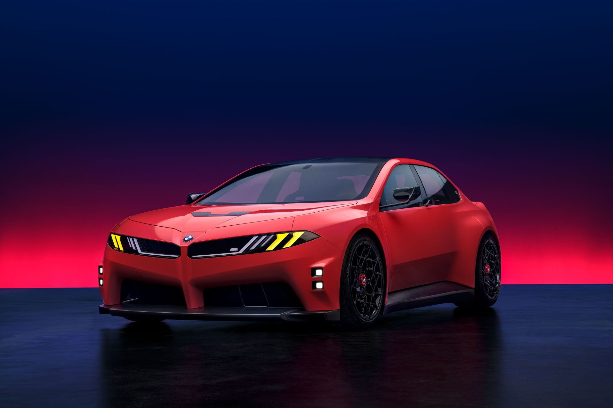
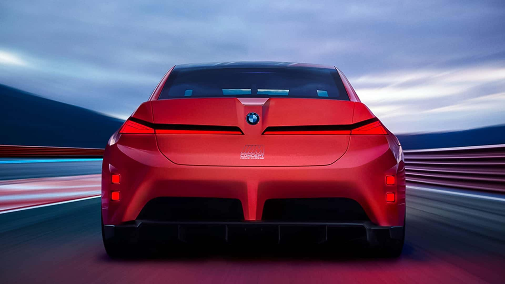
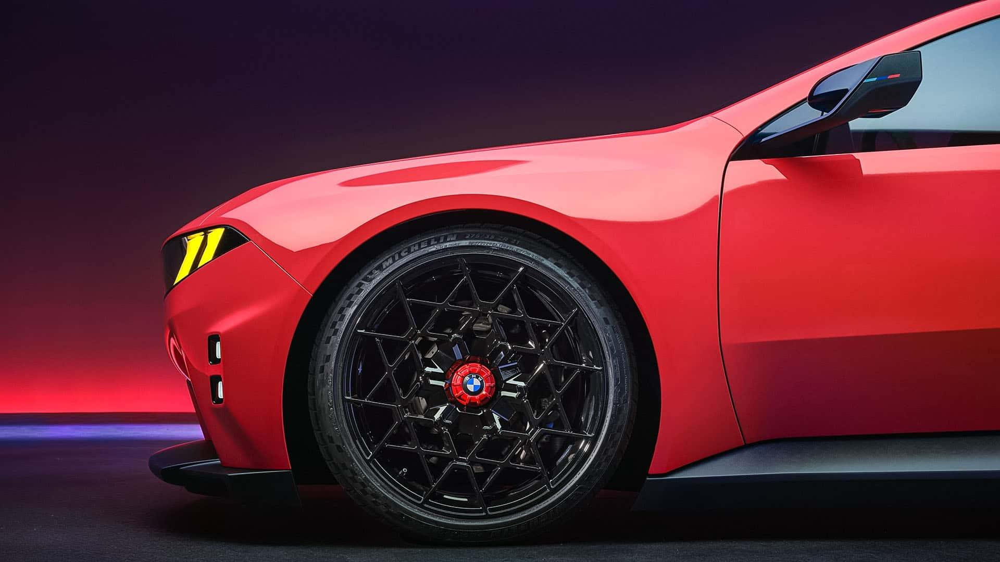
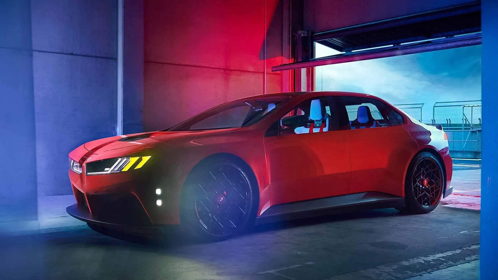
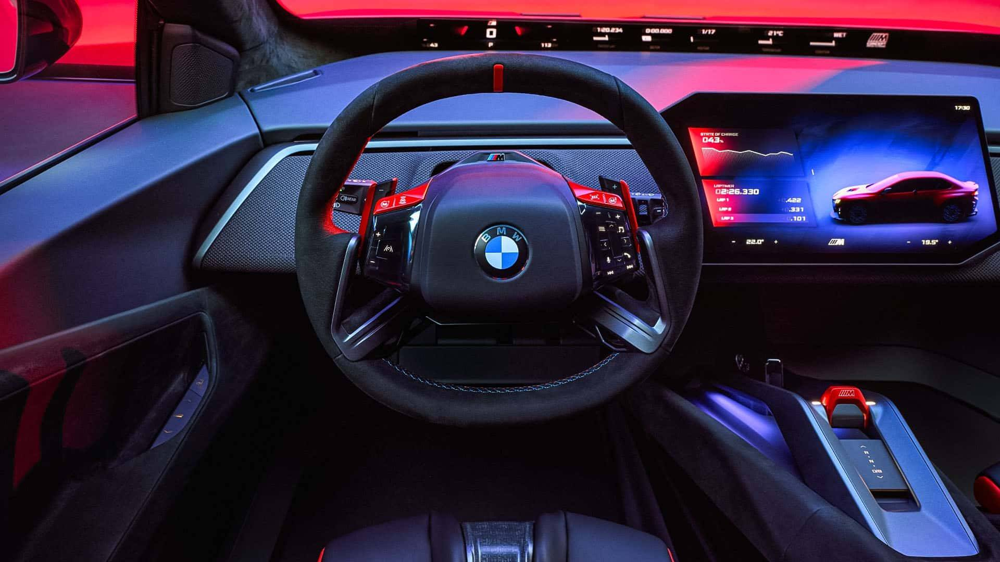
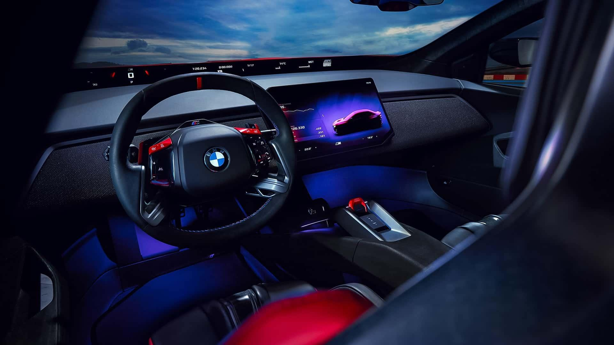
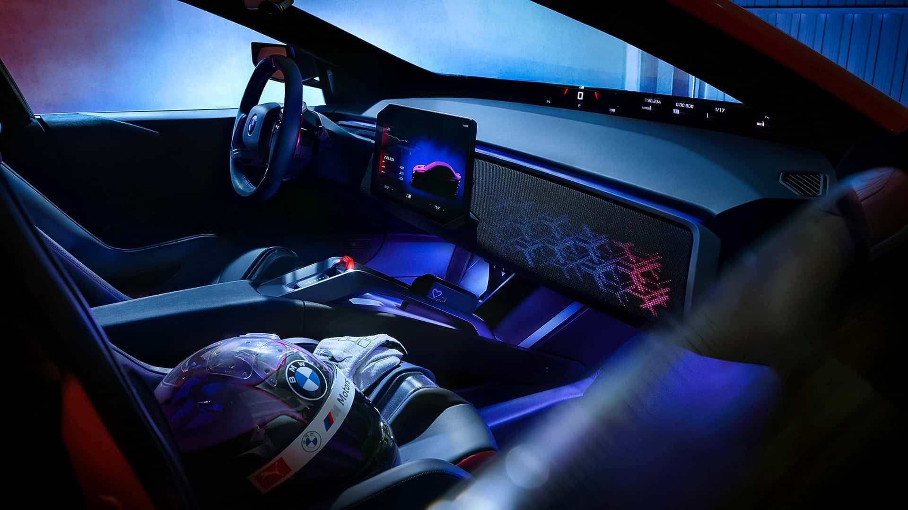
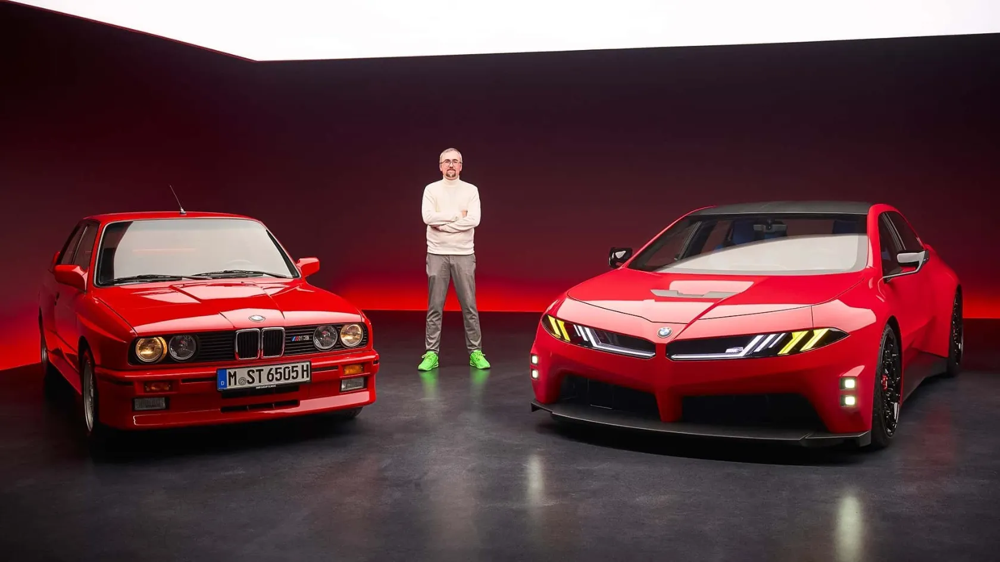
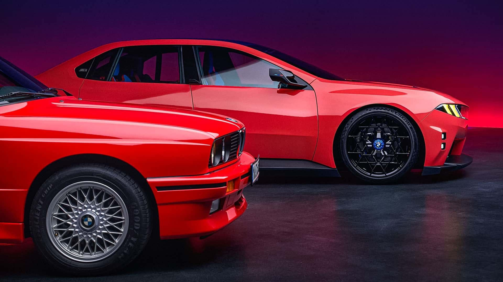

BMW'nin Spor Otomobillerinde Yeni Dönem: Neue Klasse M Konsepti Agresif Yüzüyle Tanıtıldı
BMW, Neue Klasse M'i tanıttı; yeni nesil elektrikli ve sportif M3'ün ön izlemesi.

BMW, Le Mans yarışlarıyla eş zamanlı olarak M bölümünün yeni konseptinin örtüsünü kaldırdı; yeni nesil Neue Klasse mimarisi üzerinde geliştirilen otomobil, Bavyeralıların spor modelleri için yepyeni bir tasarım dili sergiliyor.
Yeni konsept, M bölümünün geleceğini elektrifikasyona doğru çiziyor. BMW, otomobilin "Pistte doğdu; yol için üretildi" sloganıyla tasarlandığını ve M Sport markasının yarış mirasını yeni elektrikli araç teknolojileriyle buluşturduğunu söylüyor.




BMW'nin elektrikli spor otomobilleri için bir gelecek vizyonu
Neue Klasse M; kaslı gövdesi, keskin hatları, belirgin çamurlukları ve geniş omuzlarıyla iki kapılı bir coupé. Konsept, M eDrive sistemiyle donatılan ilk otomobil; bu teknoloji Neue Klasse platformunun altıncı nesli üzerinde geliştirildi ve yüksek performanslı elektrikli araçlar için optimize edildi.
BMW bu otomobilde, Heart of Joy merkezi bilgisayarıyla yönetilen dört elektrik motoru kullanıyor. Bu yapı her tekerleğin tahrik ve fren kuvvetinin bağımsız kontrolüne imkân tanıyor; Almanlara göre daha verimli enerji geri kazanımı, daha iyi yol tutuş ve daha hızlı tepki sağlıyor.
800 volt mimari ve 100 kWh'lik batarya enerji teminini üstleniyor. BMW bu pakette yüksek güç çıkışı ve daha hızlı şarj için altıncı nesil silindirik hücrelerini kullanıyor. Batarya bölmesi, gövde sağlamlığını ve sürüş dinamiklerini iyileştirmek için ön ve arka akslarla yapısal olarak bütünleştirildi.
Yeni tasarım imzalı dijital görünüm
Ön tarafta BMW'nin ünlü böbrek ızgarası farlarla bütünleşerek otomobile daha agresif bir görünüm kazandırıyor. Sarı M farları GT yarışlarından ve M Hybrid V8'den ilham alıyor; üç boyutlu Track Lights ile birlikte gelecek nesil M ürünlerinin görsel imzası olacak.



Kabin, doğal liflerden üretilen dört yeni spor koltukla donatıldı. Direksiyonda, kapı panellerinde ve koruma barlarında siyah nubuk deri kullanılırken, siyah kumaş kaplı yüzer gösterge paneline M'ye özel altıgen aydınlatma eşlik ediyor. Vites kolunda, direksiyon arkası vites kulakçıklarında ve dijital ekranlarda kırmızı detaylar göze çarpıyor.
BMW otomobili hâlâ bir konsept model olarak tanıtıyor; ancak tasarımı ve teknik özellikleri geçen yılki VDX konseptinden çok daha gerçeğe yakın görünüyor. Yeni nesil i3 ile benzerlikleri de iX3 platformu üzerinde elektrikli bir M3 ön izlemesi olma ihtimalini güçlendiriyor.


BMW, dört elektrik motorlu ve yaklaşık bin beygir güç üretecek M3 ZA0 modelinin önümüzdeki ilkbaharda üretim hattına gireceğini daha önce doğrulamıştı. Alman üretici yıllardır M ailesinden gerçek bir tam elektrikli model sözü veriyordu; yeni M3, elektrikli otomobiller dünyasında özgün M rozetini taşıyan ilk ürün olacak — muhtemelen son da olmayacak.